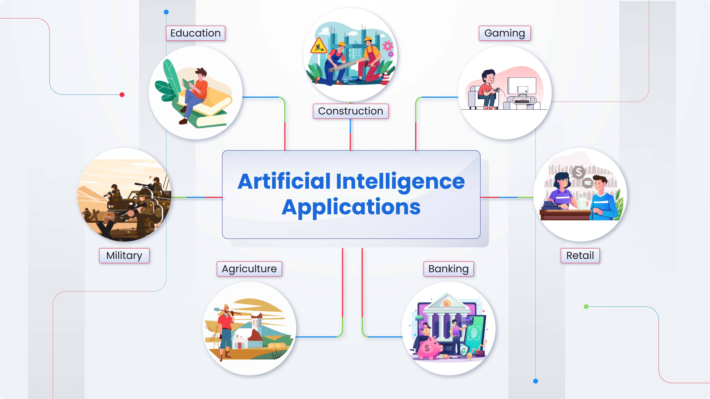
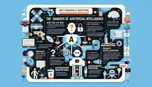

Introduction to Artificial Intelligence

Artificial Intelligence (AI) is a rapidly advancing field of computer science focused on creating systems that can perform tasks requiring human-like intelligence. These tasks encompass a broad range of activities, including learning from data, reasoning, problem-solving, understanding natural language, and interacting with the environment. AI systems aim to replicate cognitive abilities typically associated with humans, such as perception, decision-making, and adaptation to new situations. The development of AI can be traced back to the mid-20th century, with significant milestones including Alan Turing's proposal of the Turing Test in 1950, which provided a benchmark for assessing machine intelligence. AI can be broadly categorized into Narrow AI and General AI. Narrow AI specializes in performing specific tasks, such as speech recognition or image classification, while General AI refers to systems with human-like intelligence across a wide range of domains. Key techniques used in AI development include Machine Learning (ML), which involves training algorithms on large datasets to identify patterns and make predictions, and Deep Learning, a subset of ML that utilizes artificial neural networks with multiple layers. Other approaches include Natural Language Processing (NLP) for understanding and generating human language, and Computer Vision for interpreting visual information.
AI finds applications across various industries, including healthcare, finance, manufacturing, transportation, and entertainment. In healthcare, AI aids in medical diagnosis, drug discovery, and personalized treatment plans. In finance, it facilitates fraud detection, algorithmic trading, and risk assessment. In manufacturing, AI-driven automation enhances efficiency and productivity. In transportation, AI powers autonomous vehicles and improves traffic management. In entertainment, it enables content recommendation and virtual assistants. While AI presents vast opportunities for innovation and advancement, it also raises ethical, societal, and economic concerns. These include job displacement, algorithmic biases, privacy risks, and the potential misuse of AI for malicious purposes. Thus, as AI continues to evolve, it is crucial to ensure its responsible development and deployment for the benefit of society.
Applications of Artificial Intelligence
Artificial Intelligence (AI) applications span a wide array of industries and domains, revolutionizing processes, enhancing efficiency, and enabling groundbreaking innovations. In healthcare, AI is making significant strides in medical imaging analysis, disease diagnosis, personalized treatment planning, and drug discovery. AI-powered diagnostic tools can analyze medical images, such as X-rays and MRIs, with accuracy comparable to or even surpassing human experts, enabling earlier detection of diseases like cancer and improving patient outcomes. Additionally, AI algorithms can analyze vast amounts of genomic data to identify patterns and develop targeted therapies tailored to individual patients' genetic profiles, ushering in the era of precision medicine. In finance, AI plays a pivotal role in fraud detection, risk assessment, algorithmic trading, and customer service. AI algorithms can analyze large volumes of financial data in real-time to detect anomalies indicative of fraudulent activities, protecting financial institutions and consumers from cyber threats and financial crimes. Moreover, AI-driven predictive analytics models assess market trends and investor behavior to inform investment strategies and optimize trading decisions, enhancing profitability and mitigating risks. In manufacturing, AI-driven automation and robotics are transforming production processes, improving efficiency, and driving innovation. AI-powered robots equipped with advanced sensors and machine learning algorithms can perform intricate tasks with precision and agility, leading to increased productivity and reduced labor costs. Furthermore, AI-driven predictive maintenance systems monitor equipment conditions in real-time, enabling proactive maintenance interventions to prevent costly downtime and equipment failures.
In transportation, AI is driving advancements in autonomous vehicles, smart traffic management systems, and predictive maintenance solutions. Self-driving cars and trucks leverage AI algorithms, including computer vision and sensor fusion, to perceive their surroundings, navigate complex environments, and make real-time driving decisions. Smart transportation systems use AI-powered analytics to optimize traffic flow, reduce congestion, and enhance road safety. Additionally, AI-driven predictive maintenance solutions monitor vehicle health and performance parameters to detect potential issues before they escalate, ensuring fleet reliability and minimizing downtime. These examples illustrate the transformative impact of AI across diverse industries, driving innovation, unlocking new capabilities, and reshaping business models. As AI technologies continue to evolve, businesses and organizations across sectors are embracing AI-driven solutions to gain a competitive edge, deliver superior products and services, and address complex challenges in the modern world.
Dangers of Artificial Intelligence
Artificial intelligence (AI) presents numerous benefits and opportunities, but it also comes with inherent risks and dangers that warrant careful consideration. One significant concern is the potential for AI systems to perpetuate and exacerbate existing biases and inequalities. Since AI algorithms learn from historical data, they may inadvertently replicate and amplify biases present in those datasets. For instance, biased hiring algorithms could reinforce discriminatory practices or automated decision-making systems in law enforcement might disproportionately target certain demographic groups. These biases can lead to systemic discrimination and perpetuate social injustices, undermining the goal of fairness and equity in society. Another danger of artificial intelligence lies in its potential to disrupt labor markets and exacerbate unemployment. As AI technology advances, there is growing apprehension about job displacement caused by automation. AI-powered machines and algorithms can perform tasks traditionally carried out by humans, leading to the displacement of workers across various industries. While automation has the potential to increase productivity and efficiency, it also raises concerns about mass unemployment and income inequality. Furthermore, the rapid pace of technological innovation may outpace efforts to retrain and reskill displaced workers, leaving many individuals economically marginalized. Addressing these challenges requires proactive measures, including investments in education and workforce development, as well as policies to ensure that the benefits of AI are equitably distributed across society. Additionally, the deployment of artificial intelligence in critical domains such as healthcare, finance, and transportation raises concerns about privacy, security, and autonomy. AI systems often rely on vast amounts of personal data to make decisions and predictions, raising questions about data privacy and individual autonomy. Unauthorized access to sensitive data or malicious manipulation of AI algorithms could have serious consequences, including identity theft, financial fraud, and breaches of privacy. Moreover, the reliance on opaque, black-box AI systems may hinder accountability and transparency, making it challenging to understand how decisions are made and to address errors or biases. As AI technology becomes increasingly integrated into our daily lives, safeguarding privacy and ensuring the responsible use of AI will be paramount to maintaining trust and preserving fundamental rights and freedoms.